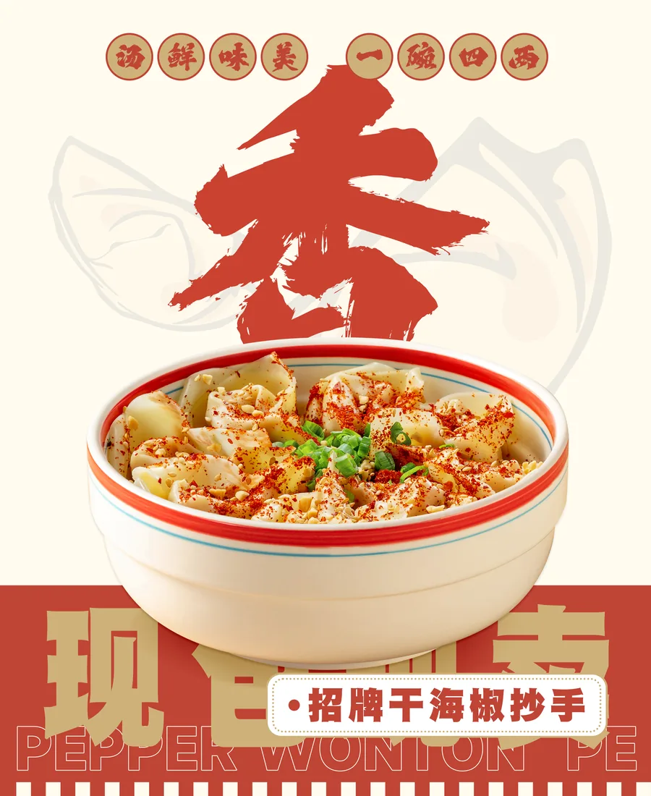
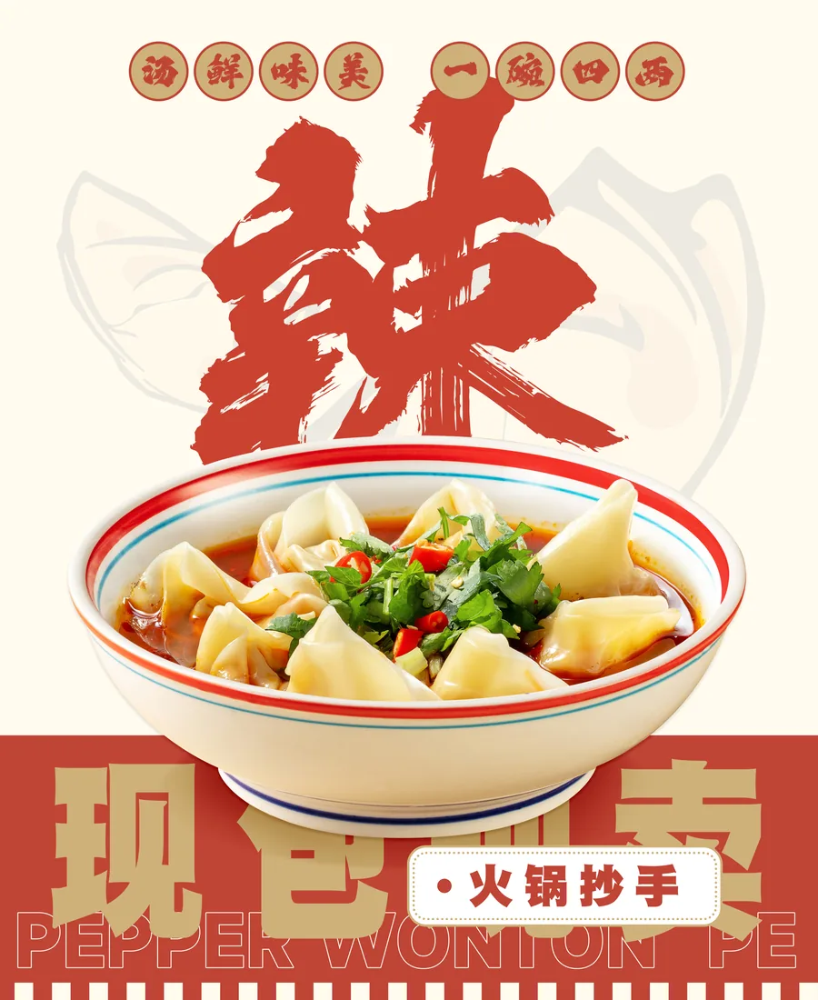
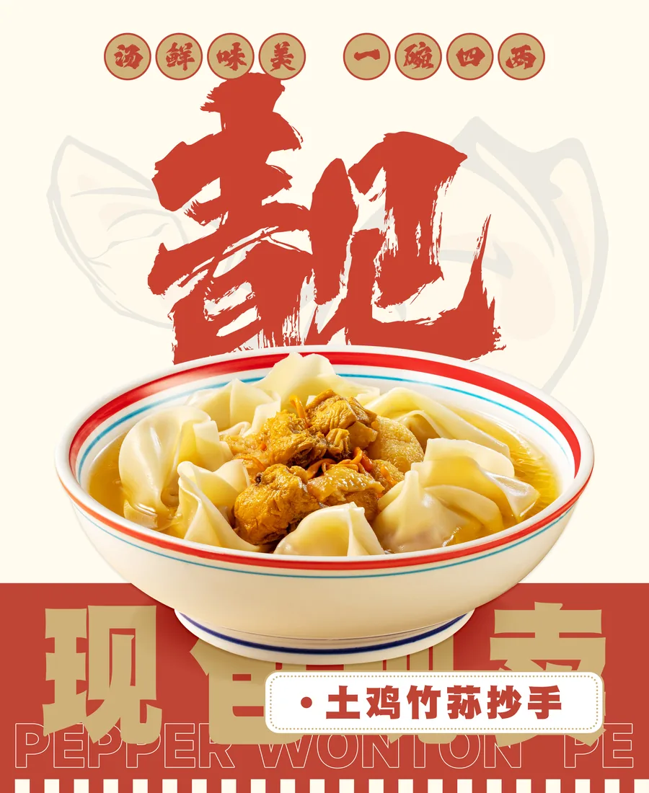
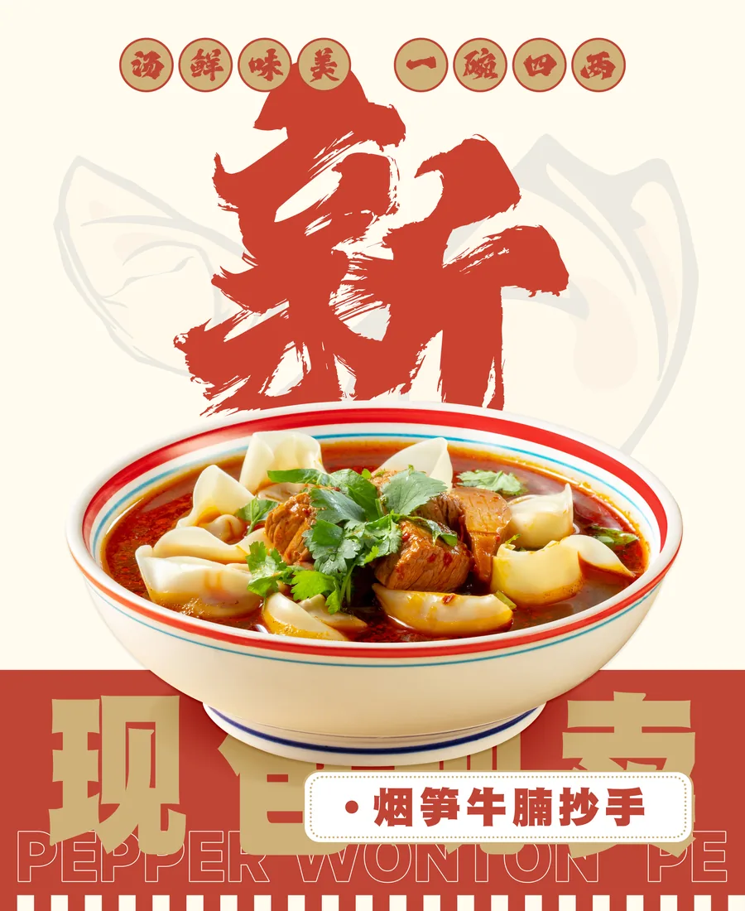
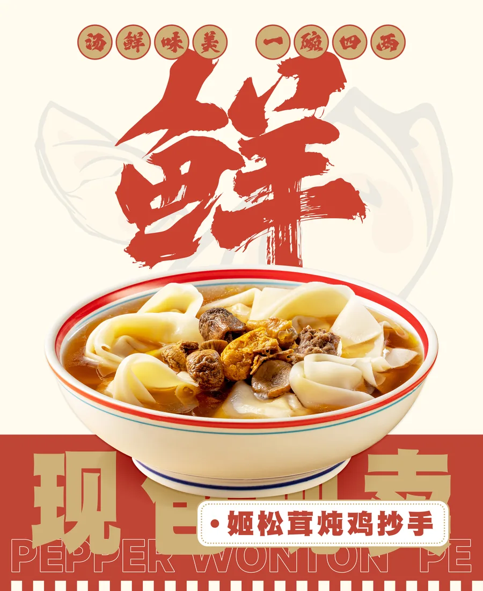
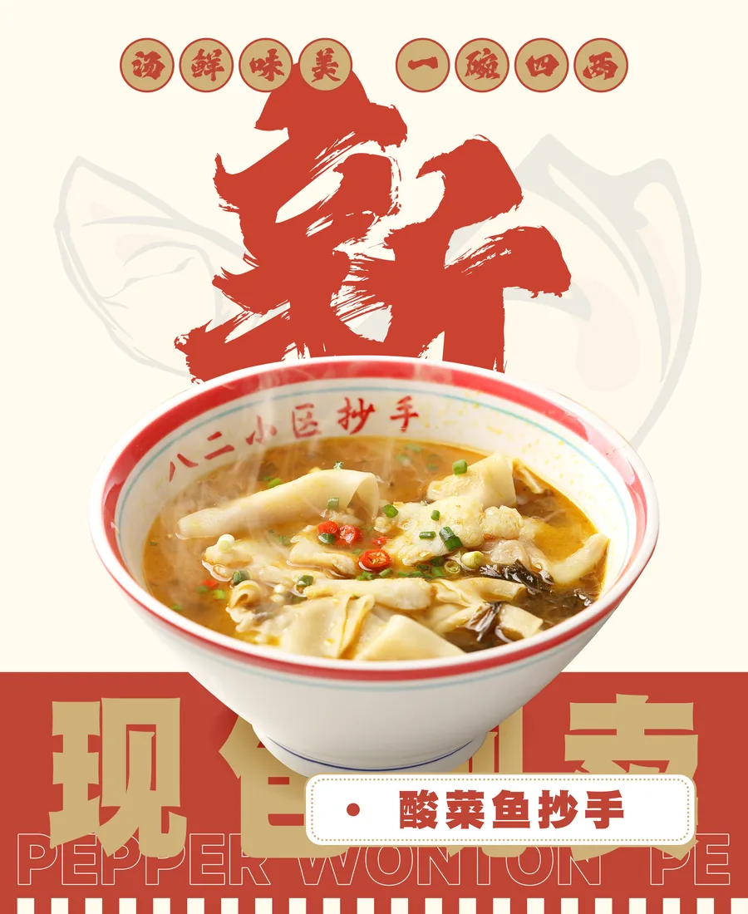
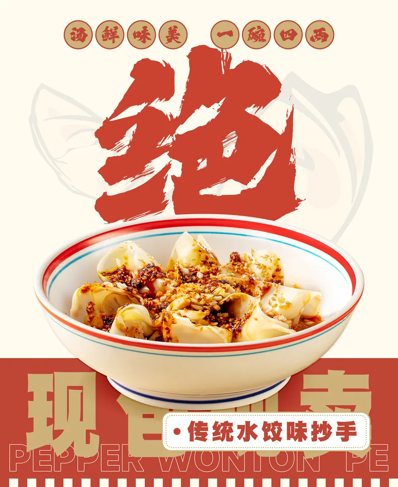

干香辣Signature Menu
十种味道，
总有一碗对胃口。
想吃干香、椒麻、酸辣，还是一碗暖汤？先跟着味道选，再认识每一款抄手。
All Flavors
十碗西南味，
一次看个够。
干香辣
招牌干海椒抄手
干海椒的焦香先到，拌开以后越吃越香。
椒麻鲜
藤椒抄手
藤椒清香带着轻盈麻感，鲜爽不闷。

红油香火锅抄手
熟悉的火锅香气，热辣浓郁又满足。
酸辣味
酸辣抄手
酸香先开胃，随后是一口利落的辣。
浓汤味
番茄牛腩抄手
番茄酸甜融进牛腩炖香，汤底温厚。

清炖味土鸡竹荪抄手
土鸡鲜香与竹荪清润，温和耐吃。

川味炖香烟笋牛腩抄手
烟笋的山野香气，衬出牛腩的浓郁。

菌汤味姬松茸炖鸡抄手
菌菇香融入鸡汤，鲜而不厚重。

酸鲜味酸菜鱼抄手
酸菜爽口、鱼汤鲜美，层次清楚。

经典味传统水饺味抄手
朴实熟悉的一碗，怎么吃都安心。